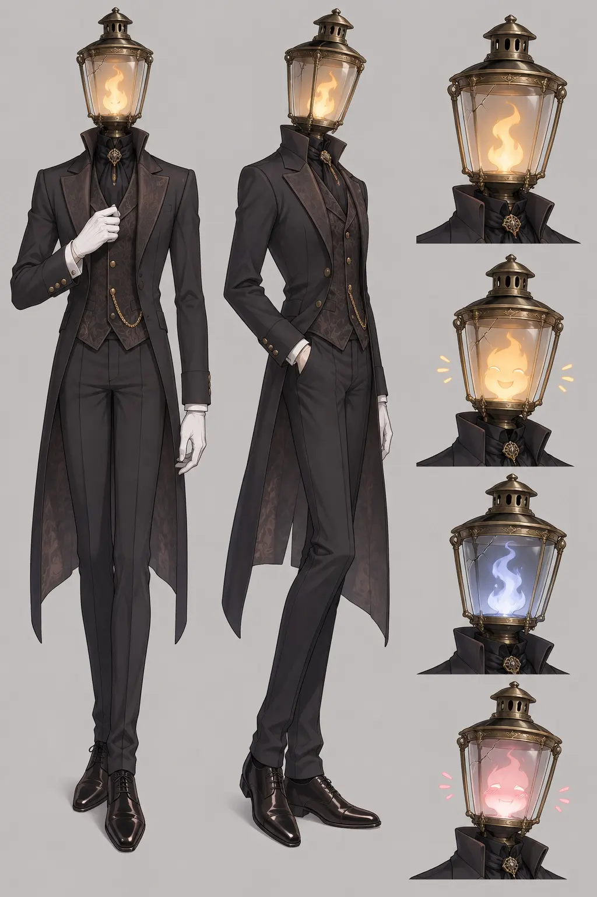
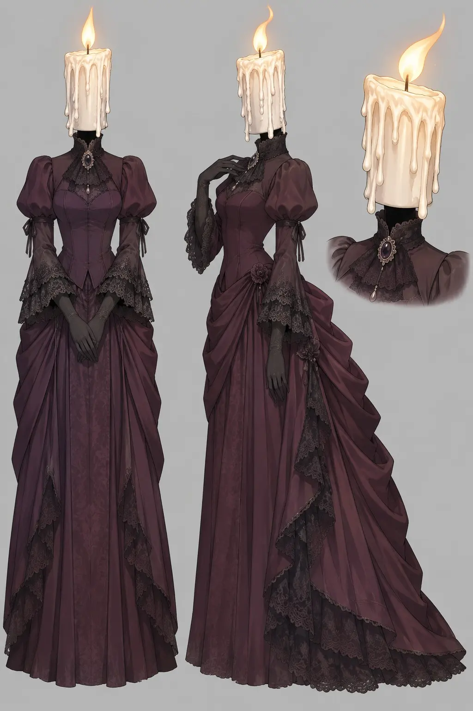

소설의 문단 몇 개가 한 장면이 되고, 한 장면은 대사까지 그려 넣은 이미지 한 장이 됩니다. 장면마다 하나의 워크플로이며, 그리기 전에 한 번, 그린 뒤에 한 번 검사합니다.
선택한 화의 원고·세계·인물을 그 시점 그대로 복사해 씁니다. 나중에 소설을 고쳐도 이미 만든 웹툰은 흔들리지 않고, 웹툰도 소설 정본을 건드리지 않습니다.


1개 이상 필수원문이 확정한 사실을 근거 문단과 함께 뽑고, 보여 줄 순간, 대사의 화자와 위치, 스스로 확신하지 못한 부분을 적습니다. 칸 수가 auto면 여기서 3~12칸을 정합니다. 코드는 대사가 원문 그대로인지와 근거 연결을 확인합니다.
대사는 작품 언어 원문 그대로, 연출 지시는 영어로호스트가 사용자가 고른 OpenAI 이미지 모델을 참조 이미지와 함께 호출하고, 결과 파일을 출처와 함께 서버에 넘깁니다. 칸마다 따로 그리지 않고 장면 전체를 대사까지 한 장으로 그려, 인물과 조명이 칸 사이에서 흔들리지 않게 합니다.
완성 이미지를 열어 그려진 글자를 그대로 받아 적고, 코드가 원문과 글자 단위로 대조합니다. 말풍선 화자, 읽기 순서, 관측한 칸 수, 원문에 없는 소품까지 봅니다. 열어 보지 않은 검토는 통과시키지 않습니다.